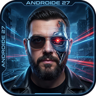

Escribe, adjunta una foto o graba una nota de voz
Androide 27
Mordejai Clonsio
Androide 27 Mordejai ClonsioPasar a mi día — se convierte en tarea tuya y aparece en Hoy.
Hoy no — lo quito de tu vista. El correo sigue intacto y puede volver a salir si cambia algo.
Nunca más — dejo de traerte cosas parecidas, también las futuras. Reversible en Ajustes.
Con este nombre firma tus repasos y te habla.
El modo Androide es el de la máquina: rejilla, luces y tipografía de terminal.
Las voces vienen de Android. Si no ves ninguna de hombre, descárgalas en Ajustes de Android → Texto a voz → Instalar datos de voz → Español.
Sin estas dos, la app no puede hablar con el motor: ni repaso, ni chat, ni capturas.
Google apaga modelos cada cierto tiempo. Si la transcripción falla diciendo que el modelo no existe, vuelve aquí y elige otro con "flash" en el nombre.
Toca revisar para comprobar que cada pieza está viva.
Aquí está todo lo que has quitado de tu vista, y puedes devolverlo cuando quieras. Nada de esto borra correos.
Quitado con "Hoy no"
Bloqueado con "Nunca más"
Toca revisar para verlos.
Calculando…
Las fotos y audios no entran en la copia. Lo que importa —su transcripción y lo que salió de ellos— sí.
Escribe, adjunta una foto o graba una nota de voz